Google Services and Enterprise Connectors
The following Google connectors are available to be downloaded via the connector public library:
- Google Calendar
- Google Drive
- Google Sheets
Google Services
Taking into consideration that each one of these connectors have their own configuration and their own defined parameters, it is recommended to read the Google API documentation for Google Calendar, Google Drive and Google Sheets.
Google Calendar
The Enterprise Connectors plugin has integration with the Google Calendar API.
- createNewEvent
- deleteEvent
- getEventForId
- listCalendar
Note: If the listCalendar response with the Service Account authentication does not return any information, review the Google OAuth Client ID - G suite permission setting. Otherwise, you can use the Authorization Code authentication.
- listEventsMyCalendar
- updateEvent
Google Drive
The Enterprise Connectors plugin has integration with the Google Drive API.
- copyFile
- createFileDrive
- deleteFile
- listFilesFolder
- patchFile
- sharedFile
- updateFile
- uploadFiletoDrive
Google Sheets
The Enterprise Connectors plugin has integration with the Google Sheets API.
To do this, an authentication configuration named Service Google Account is included by default inside the configuration auth section. This configuration only needs a service account file credential to work successfully.
When using a Google endpoint with PM Connectors particular settings must be configured.
Google Connectors Configuration Example
This example shows how to configure the following:
Configuring the OAuth Client ID
To generate the credential keys needed to integrate ProcessMaker Enterprise Connectors with a Google account, follow these steps:
Access the Google Developers Console page.
-
In the top navigation menu, and then click select menu.
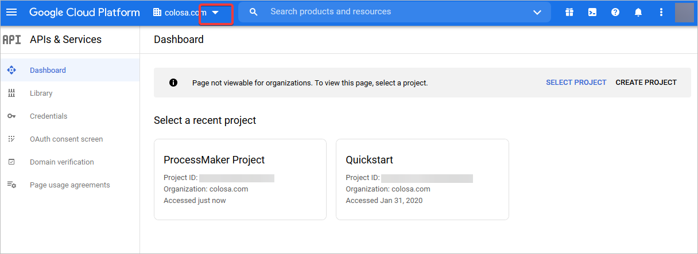 -
Choose the New Project option.
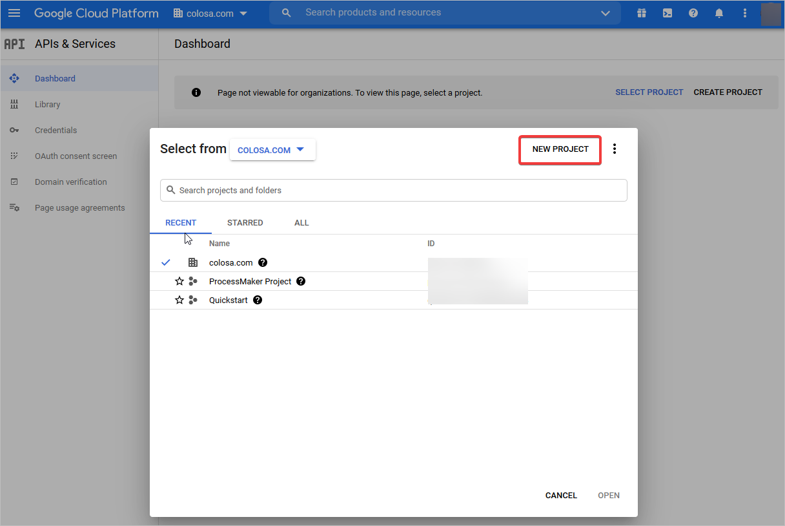 -
Enter the Project name, select the Organization and then click Create.
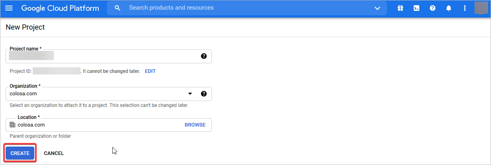 -
Select the project created.

-
Click Create Credentials and then click OAuth client ID.
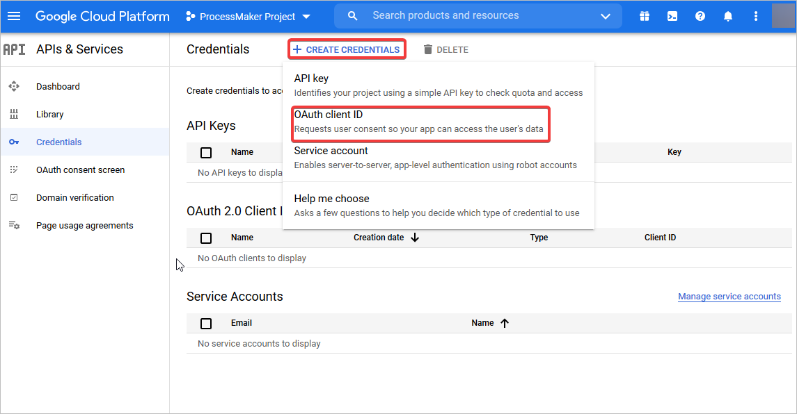 -
In the application type, select the Web application option.
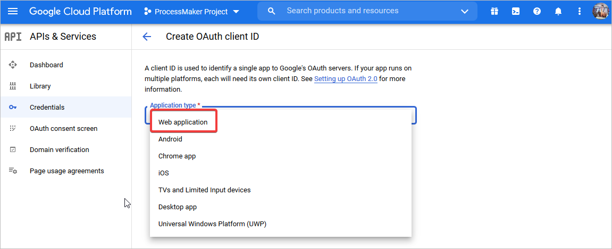 -
Enter the App name.
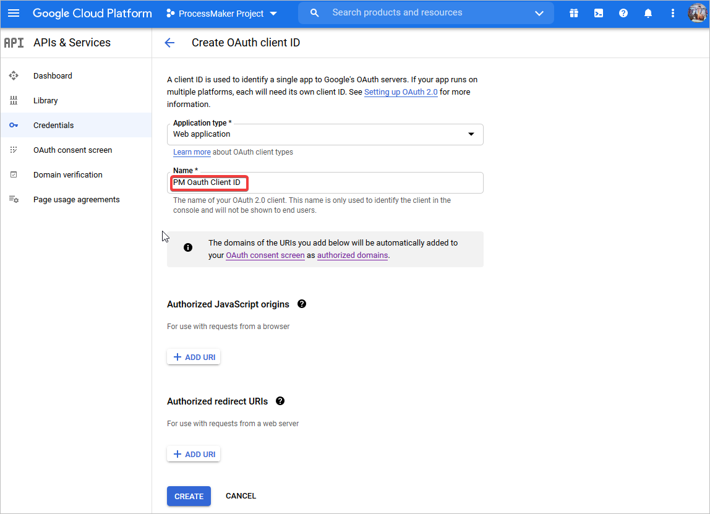 -
To fill the
Authorized redirect URIs
from ProcessMaker configuration, follow these instructions:- Go to Admin > PM Connectors > Authentication Configuration menu.
-
The Authentication Configuration screen displays. In the Service Account Google row, click Edit to open the authentication configuration.
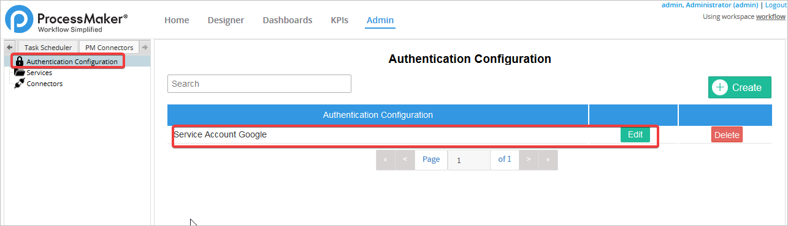 -
Select OAuth2 option in
Protocol
, and then select Authorization Code in Sub-protocol. 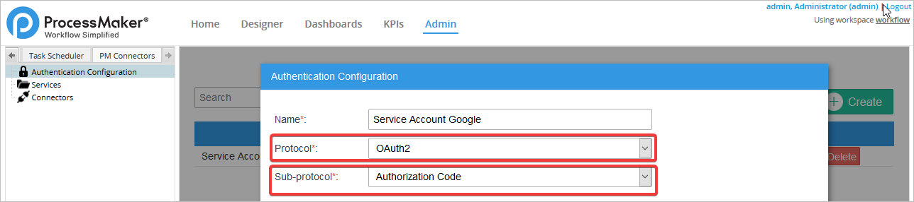 -
Click Edit button on the redirectUri parameter.
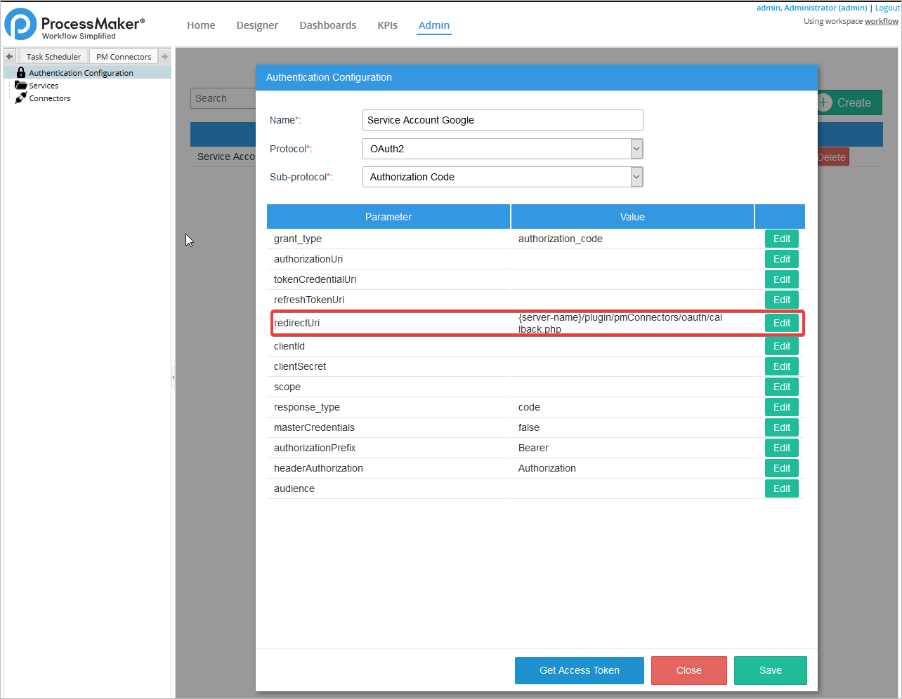 -
Change the {server-name} value with the name of your server, copy the entire URL and then save the value.
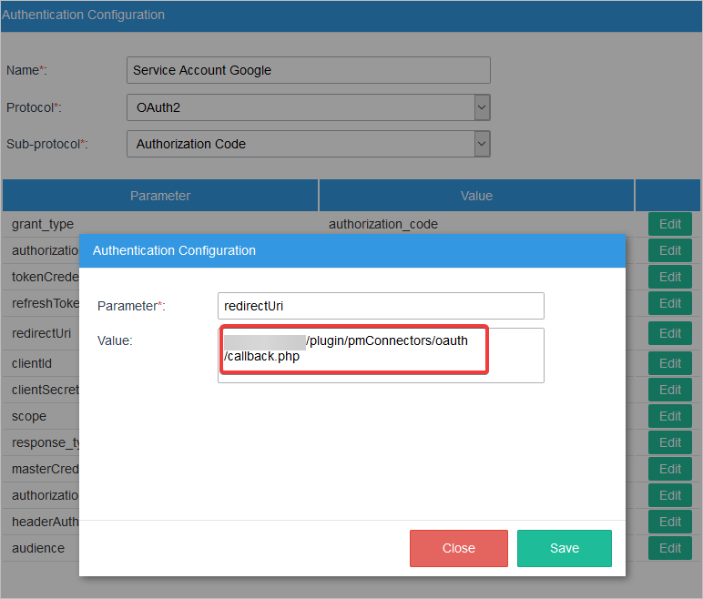
-
Paste the URL in the URIs box, and the click CREATE.
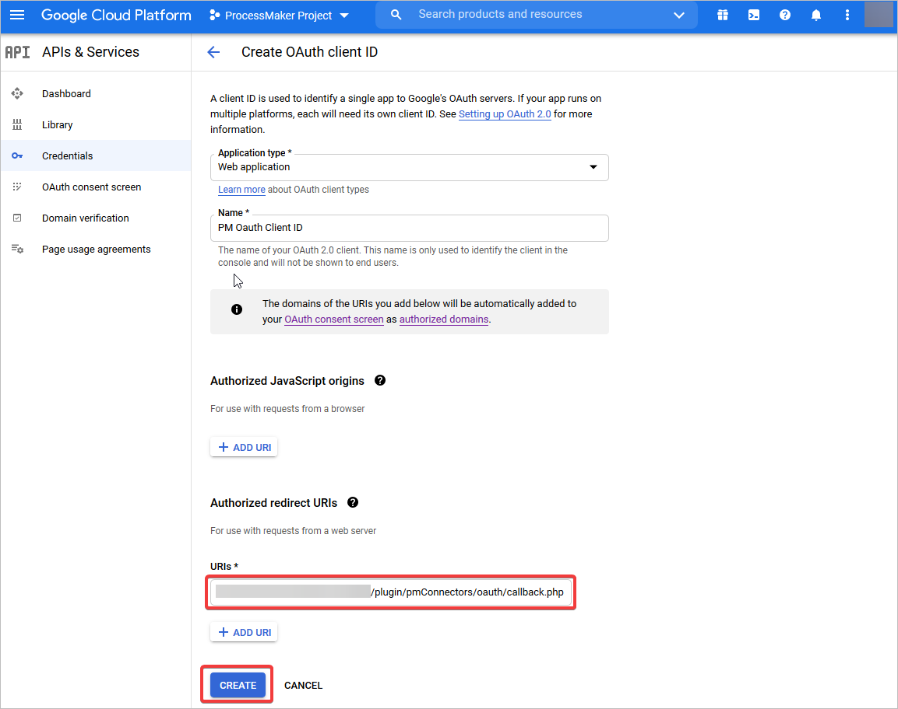 -
The keys were successfully created. Click OK
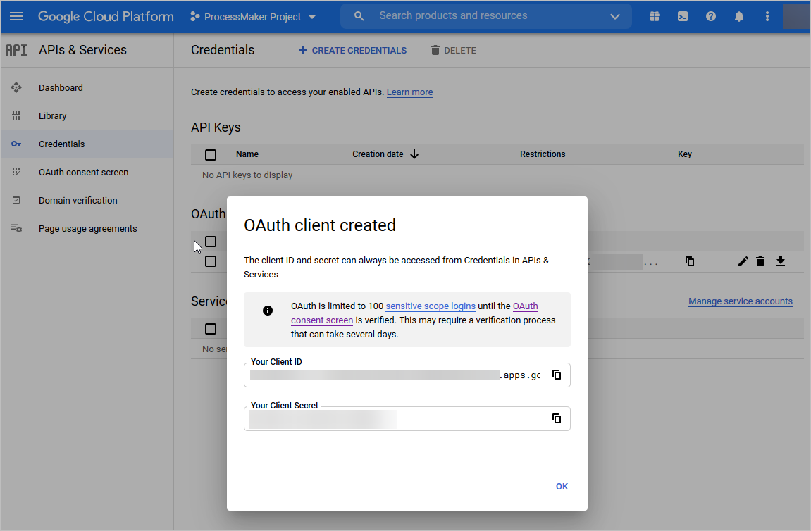 -
Click OAuth Consent Screen, and the click MAKE INTERNAL in the User type section.
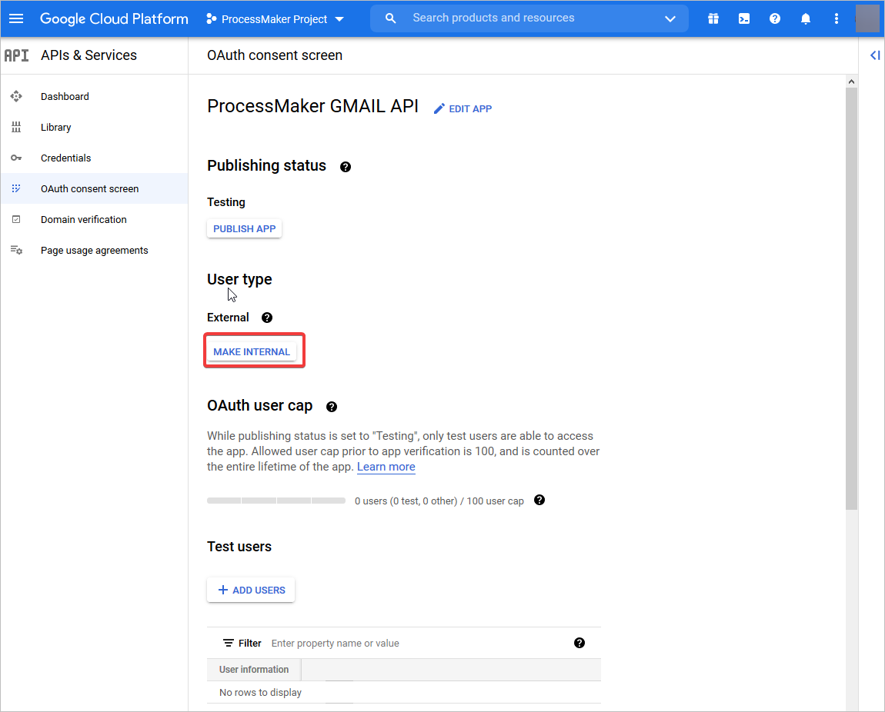 -
Click CONFIRM button to apply the setting.
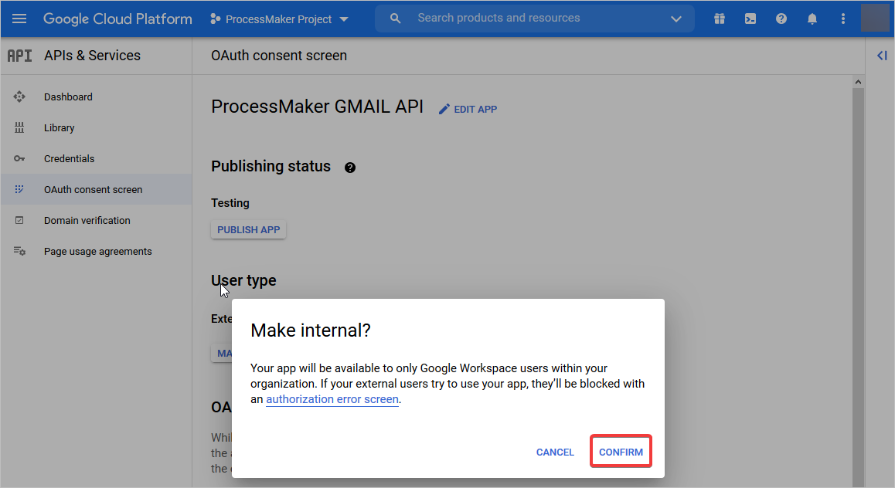 -
Return to the Credentials option, and then click the
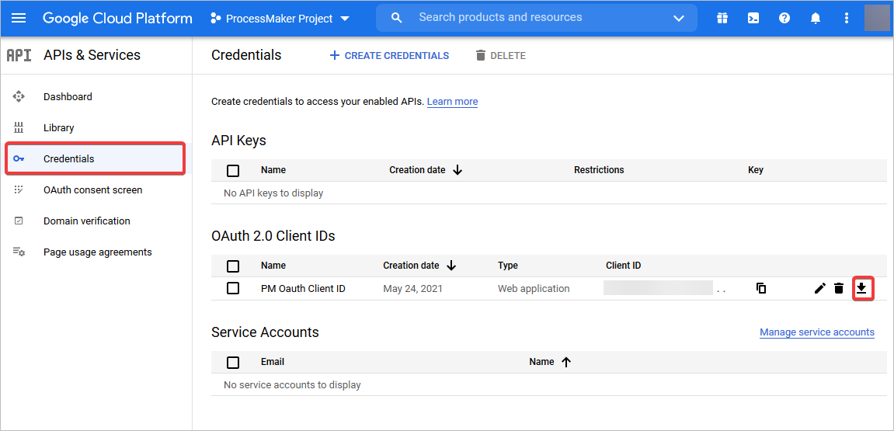 icon to download the credentials in a .json file.
icon to download the credentials in a .json file. -
In the left sidebar menu, select Library.

-
In the search box, type drive and then select the Google Drive API option.

-
Click ENABLE.
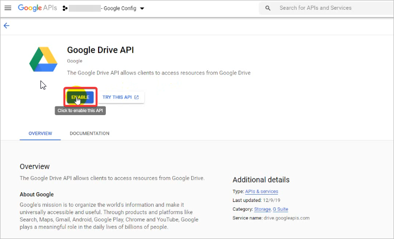
Note: If you are integrating with Google Drive APIs, take into account that a service account must have permissions to access the Google Drive folders. For this purpose, you must share your Google Drive folders with the Service Account ID (Email address) configured in this section. For more information about service accounts and IAM roles, see Service accounts.
Enabling Google API
In order to allow the Enterprise Connectors plugin to access the user Google account information, it is necessary to enable the API requests. For this purpose, after the creation of a new Service Account, follow these steps.
In the navigation menu, go to the APIs & Services > Library option.
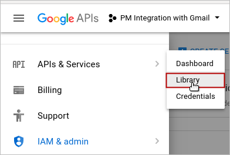
The API library displays. Go to the G Suite section.
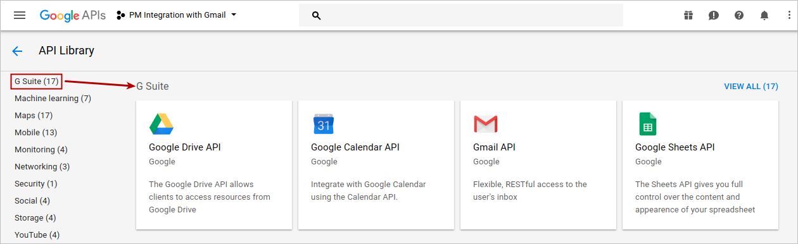
In the G Suite section, enable all Google API libraries needed for the Google connectors.
- Click the Google Calendar API icon or link Google Calendar API to enable the Google Calendar API.
- Click the Google Drive API icon or link Google Drive API to enable the Google Drive API.
- Click the Google Sheets API icon or link Google Sheets API to enable the Google Sheets API.
A similar window displays for each library:
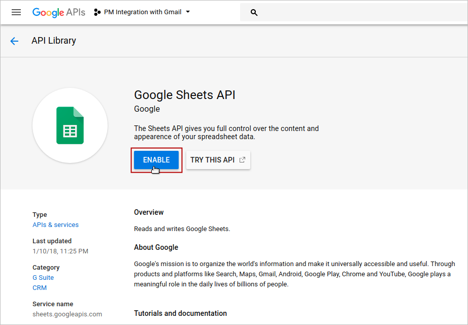
Click ENABLE.
Configuring Google Connectors
Configure Enterprise Connectors in your ProcessMaker instance to correctly run Google Services.
Connectors
To configure Google Enterprise Connectors, follow these steps:
Go to Admin > PM Connectors > Connectors menu.
The Connectors screen displays. At the top right of the screen, click the Download button to download the necessary connectors from the connectors library.
The Download Connectors from the Library screen displays. In the Services drop-down menu, select one of the following Google connectors.
In this case, select Google Calendar.
All the available connectors for the Google Calendar display in the same screen. Download all the connectors by clicking the Download All button located at the bottom right of the screen.

The connector status changes to Downloaded. Next to the Status column, the Replace button displays for each connector. Click Close.

Note: After downloading all the connectors, the Google Calendar service, and the Service Account Google authentication configuration automatically download.
The connectors are listed. Click Edit for each connector to change its settings.
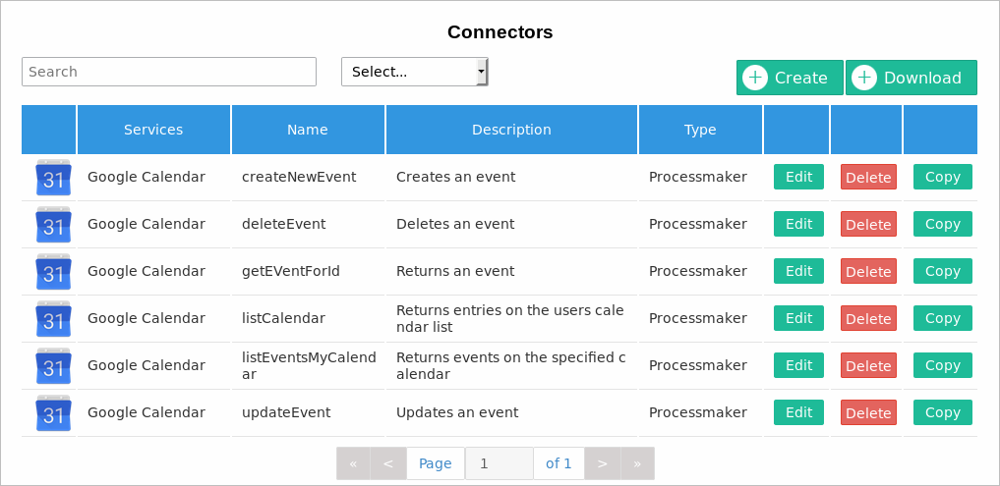
The Connectors screen displays. In the Services drop-down, ensure that the Google Calendar service is selected. In the Authentication Configuration drop-down menu, ensure that the Service Account Google is selected. Modify all the necessary parameters and finally click Save.
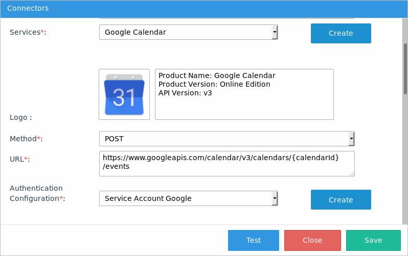
Repeat the last two steps for each connector.
Authentication Configuration
The Service Account Google automatically downloads after you download the Google Connectors. After obtaining the private key from the Google Developers Console page, provide the authorization key to the Service Account Google authentication configuration. Follow these steps to provide the authorization key.
Go to Admin > PM Connectors > Authentication Configuration menu.
The Authentication Configuration screen displays. In the Service Account Google row, click Edit to open the authentication configuration.

-
Copy the values provided on the .json file downloaded when generating the API Credentials on the Google Console Developer.
It is recommended review Google Rest APIs to see additional instructions. Then, to share files of Google Drive, configure the Google Drive scope by adding the following values:
https://www.googleapis.com/auth/drive https://www.googleapis.com/auth/drive.file 
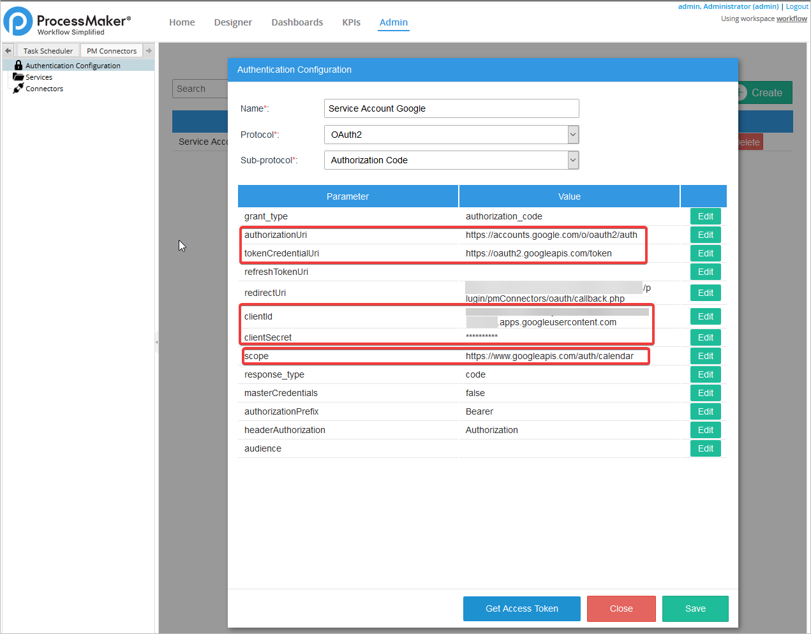
-
Click the Get Access Token button and then grant permissions to the application.
-
A success message appears, then click Save button.

Services
The Google Calendar service automatically downloads after you download the Google Calendar Connectors. To see the service details and the Google Calendar version with which connectors are connected, follow the next steps:
Go to Admin > PM Connectors > Services menu.
The Services screen displays. In the Google Calendar row, click Edit to see the Google Calendar service details.
The Services window displays. Click Close.